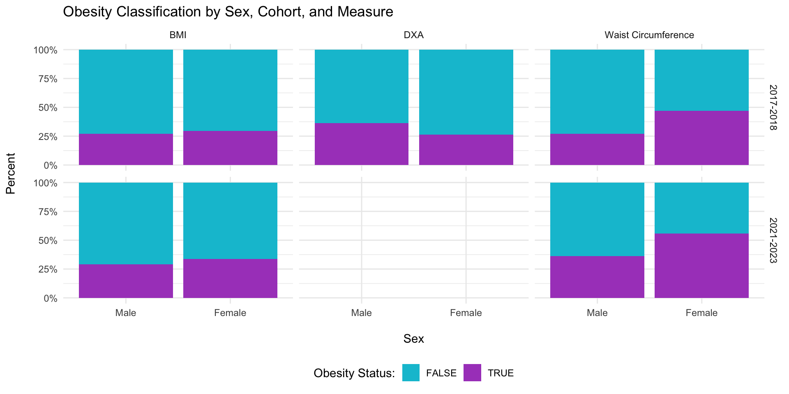
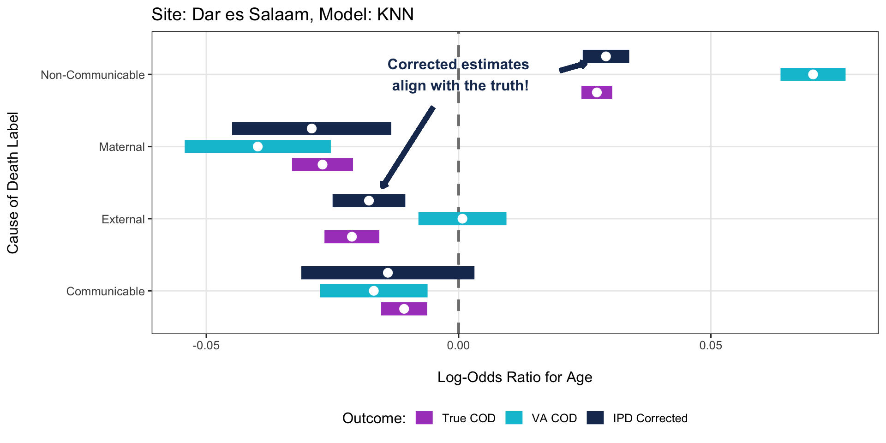
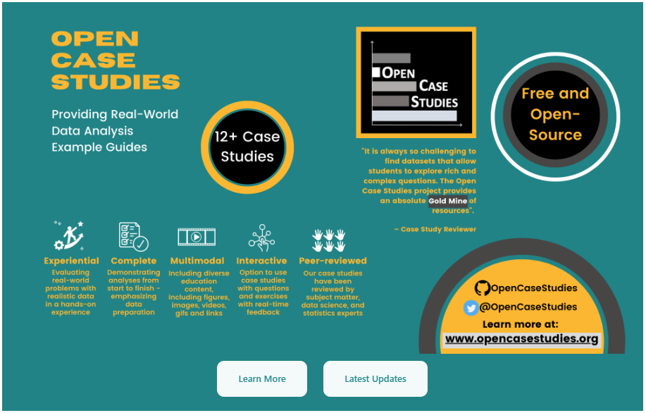
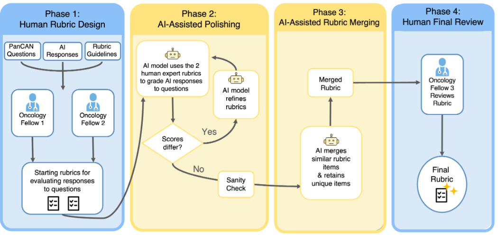

Public Health in a World
Where We Can Predict Anything
Institute for Informatics, Data Science & Biostatistics
Speaker Series
September 15, 2026
LLM breakthroughs have driven AI’s current evolution

Source: medium.com/@lmpo/a-brief-history-of-lmms-from-transformers-2017-to-deepseek-r1-2025-dae75dd3f59a
AI is a highly infectious exposure
And it is spreading faster than ever

Source: https://www.nebuly.com/blog/2024-the-year-of-llm-user-intelligence
AI is already reshaping scientific discovery
2024 Nobel Prizes in biology and chemistry went to AI breakthroughs


But important public health outcomes remain difficult to measure
Many outcomes we care about are:
Expensive:
Adiposity via dual-energy X-ray absorptiometry scans
Difficult to observe:
Disease incidence with incomplete testing
Never recorded:
Causes of death without medical certification


Malnutrition risk from remotely sensed and field data…

“We combine supervised machine learning methods and remotely sensed feature sets with time series child anthropometric data … to generate accurate forecasts of acute malnutrition at operationally meaningful time horizons.”
We can find examples in many fields and everywhere in between
Here are two very different examples from my work
Complex Predictions: When cause of death is not recorded, it is predicted from interviews
Simple Predictions: Adiposity is expensive to measure directly, so it is predicted from height and weight

Recent work predicts cause of death directly from narrative interviews
Narrative summaries + AI/ML predictions can reduce burden compared to structured VA

Source: https://journals.plos.org/plosone/article?id=10.1371/journal.pone.0308452/
We evaluated how well AI models predict cause of death from narratives
Comparing methods such as KNN, SVM, BERT, and GPT-4 using only the narrative summaries

Source: https://openreview.net/forum?id=QbCHlIqbDJ
Prediction-Powered Inference (PPI; Angelopoulos et al., 2023)
Start with naive approach, then ‘rectify’ its bias using the difference between the predicted and measured outcomes
Guarantees inferential validity, regardless of the quality of the predictions
\(\hat{\beta^\star}\) = \(\hat{\gamma}_{\text{unlab}}\) - (\(\hat{\gamma}_{\text{lab}}\) - \(\hat{\beta}_{\text{lab}}\))

Source: science.org/doi/10.1126/science.adi6000
Revisiting PostPI clarifies how these methods fit together
The apparent “fix” to PostPI reveals a broader distinction between calibration and rectification
Once we have a valid estimator, prediction quality becomes an efficiency question
With surrogate \(g\),
\[\operatorname{Var}\{\widehat\beta_{\mathrm{PPI}}(g)\} = M^{-1}\left[\frac{\operatorname{Var}\left\{X[g(Z)-X^\top\beta_0]\right\}}{N} + \frac{\operatorname{Var}\left[X\{Y-g(Z)\}\right]}{n}\right]M^{-1}\]
Rectification protects the target for a broad class of surrogates
Changing \(g\) changes how efficiently prediction-derived information is used

We developed a method for correcting inference on VA predicted COD
By extending the PPI framework to multiclass prediction problems


AI, like any exposure, requires different ‘treatment’ strategies
My research program takes a holistic approach to intervening across the scientific pipeline
Statistical Methods (Today’s Focus)

Open-Source Software

Free Training Resources

Open Case Studies

Benchmark Datasets

Service